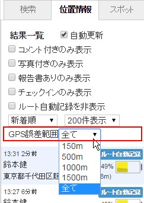
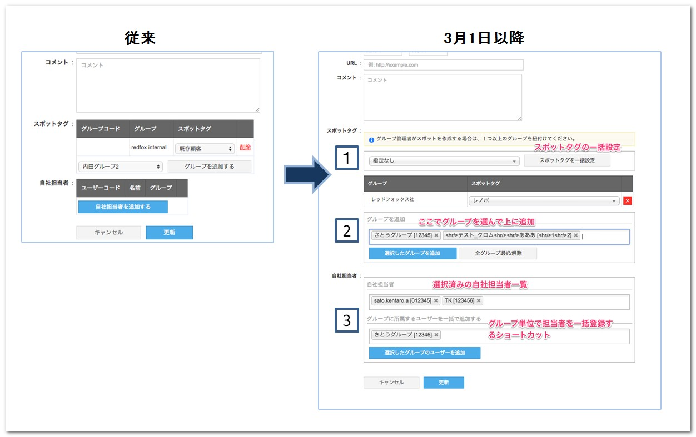
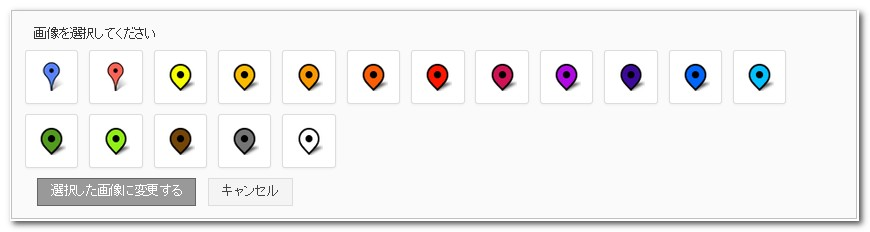

管理サイト¶
ver.2.8.15 (2015/11/25)¶
ver.2.8.14 (2015/11/11)¶
主な変更点¶
位置情報¶
検索条件項目の変更
検索条件からGPS誤差を取り除きました。 精度の低い位置情報を取り除いて見たい場合には「位置情報」タブのGPS誤差範囲による絞り込みをご利用ください。

スポット¶
自社担当者の一括出力ができるようになりました。
スポットの一括出力をした際に、別ファイルで自社担当者のファイルも出力できます。
自社担当者を一括で変更する時などにご利用ください。
注釈
これらの一括出力機能は標準ではご利用できません。 ご希望のお客様は弊社カスタマーサポートまでご連絡ください。
改善¶
位置情報画面からプッシュ通知が送信できないというお問い合わせを多く頂いたので、 送信できない場合にFAQへご案内と、簡単な対処法を表示するように改善致しました。
注釈
他にもお問い合わせの内容を元に、随時マニュアルやFAQを更新しております。 お困りのことがあればご確認ください。 FAQはこちら https://gps-punch.jp/faq
ver.2.8.13 (2015/10/13)¶
ver.2.8.12.1 (2015/9/10)¶
ver.2.8.12 (2015/8/31)¶
主な変更点¶
タイムスケジュール管理¶
スポットの検索条件を一部変更しました。
スポットタグ条件からグループを分離し、新たに検索条件にグループを追加しました。これにより、グループに関係なく指定したスポットタグが設定されたスポットを全て検索できるようになりました。
注釈
これまではグループ毎のスポットタグを選択するようになっていたため、全てのスポットタグを選ぶ必要がありました。
スポット¶
- スポット新規作成画面のデザインを一部変更します。所在地を入力すると地図上のピンに反映される機能が初期状態で有効になるようになりました。
注釈
これにより、所在地を入力したのにピンの位置と所在地が異なった状態のまま登録してしまう間違いが少なくなります。
重要
以下の機能はリリース延期となりました。時期については改めてアナウンスさせていただきます。
ver.2.8.11 (2015/7/29)¶
ver.2.8.10 (2015/7/15)¶
ver.2.8.9 (2015/6/30)¶
主な変更点¶
ステータス¶
- ステータスのアイコンとして設定できる画像の種類を増やしました。
スポットタグ¶
- スポットタグにアイコン画像を設定できるようにしました。
アイコン画像を設定したタグをスポットに付けると、地図上で表示されるスポットの画像が変わります。
スポットタグの変更をすぐにスマートフォンに反映したい場合は、GPS Punch!アプリの[設定]>[設定を同期]ボタンを押す必要があります。ご注意ください。
注釈
上記を実行しない場合、スマートフォン側への反映は翌日になります。
{kind=link}
設定した後の見え方
注釈
１つのスポットにグループ毎に異なるスポットタグを設定した場合はアプリでは選択中のグループのスポットタグのアイコン画像が表示されますが、管理サイトでは設定済みスポットタグ一覧の１番目のスポットタグに設定されているアイコン画像が表示されます。
ver.2.8.8 (2015/6/15)¶
ver.2.8.7 (2015/5/29)¶
主な変更点¶
位置情報¶
- 一般ユーザーも 行動管理 > 位置情報画面が利用できるようになりました。
- グループの権限に従い、「自分だけの行動履歴」「グループ全員の行動履歴」が地図で閲覧できるようになりました。
スポット¶
- スポット画面の用語をアプリの表記に合わせて、一部変更しました。
- スポットを一括登録する場合、スポットコード（旧：顧客コード）が必須になりました。
- スポットコードが設定されていない行はエラーになり、登録ができません。
重要
スポットを管理サイトで1件ずつ手作業で登録する場合やアプリから登録する場合は、従来通りスポットコードが空でも登録できます。
ただし、後で一括更新や一括削除ができませんのでご注意ください。
報告閲覧¶
- 報告書の閲覧時に、報告書の写真をオリジナルのサイズで表示できるようになりました。
- 一般ユーザーで閲覧できる報告書が、所属グループの「他メンバー情報の閲覧」設定と一致するようにしました。
注釈
グループの「他メンバー情報の閲覧」設定が「全員」の場合、同じグループに所属する全てのメンバーの報告書を閲覧することができます
報告書フォーマット¶
- 報告書を利用グループを設定しない状態でも登録・更新できるようになりました。
注釈
来月使う予定の報告書などを、どのグループからも利用できない状態にしておいて、事前に作成できるようになりました。
ver.2.8.6 (2015/5/13)¶
ver.2.8.5 (2015/4/27)¶
{kind=link}
ver.2.8.4 (2015/3/31)¶
主な変更点¶
報告書¶
- フィールドの仕様を一部変更しました。
| フィールドのタイプ | 変更点 |
|---|---|
| デフォルト値を空白か現在日のどちらかに設定できるようになりました。 | |
| デフォルト値を空白か現在時刻のどちらかに設定できるようになりました。 |
重要
以下の機能はリリース延期となりました。時期については改めてアナウンスさせていただきます。
ver.2.8.2 (2015/2/27)¶
主な変更点¶
スポット¶
- グループ管理者もスポット機能が使えるようになりました。ただし、一括登録はできません。
- システム管理者が、グループ毎に操作権限を設定できます。（参照・作成・編集）
- グループ管理者のグループに紐づくスポットのみ操作ができます。
- スポット一覧画面にソート機能を追加しました。
- 顧客コード、スポット名、所在地、作成日、更新日でソートできます。
- スポットタグ・自社担当者の操作UIを変更しました。
操作手順を簡略化できるよう、UIが一部変更になっています。

- 同じスポットタグを複数グループにつける場合は、まとめて追加できるようになりました。
- 自社担当者にグループ内のメンバーを、まとめて追加できるようになりました。
- スポットのコメントの文字制限を3,000文字までに変更しました。
- スポット詳細画面にて時刻表示を「秒」まで表示している箇所は、「分」までに変更しました。
ステータス¶
- ステータスの文字上限数を8文字から25文字に変更しました。
{kind=link}
{kind=link}
ver.2.8.1 (2015/2/13)¶
ver.2.8.0 (2015/1/30）¶
主な変更点¶
全般¶
- 各種インポート、CSVデータ作成処理が完了した際にポップアップで通知するようになりました。
{kind=link}
- 通信ができない場合に、オフライン警告が表示されるようになりました。
位置情報画面を自動更新表示している時に、最新情報が取得できていない状態がわかるようになります。
位置情報¶
- 行動履歴のCSV出力の仕組みを変更し、別途メニュー化しました。
{kind=link}
仕組みを非同期に変更して、バックグラウンドでCSVファイルを作成します。 その間は他の操作をしながら待つことができるようになりました。 (上記の説明にある通り、処理が完了したら通知でお知らせします。）
- 行動管理のスポット検索仕様を変更しました。
スポットタグを自由入力形式から、選択形式に変更しました。
改善¶
- ブラウザでスポットタグ名をコピーすると、末尾に半角スペースが入るのを防ぐようにしました。 スポットインポートのデータ作成の際に、コピー&ペーストを利用してタグが整合性エラーになる件が解消されます。
ver.2.7.14（2015/1/13）¶
主な変更点¶
グループ管理¶
- 一般ユーザーの権限に、スポットの編集・削除の設定を追加しました。
グループ・ユーザー設定 > グループ管理より設定ができます。
これにより、グループに所属する一般ユーザーがアプリを利用する場合のスポットの編集・削除を制限することができるようになります。
アプリを含めた全体像については こちら をご確認ください。
- グループ一括登録のCSVフォーマットにスポットの編集・削除の設定を追加しました。
CSVフォーマットの変更点については以下の表の通りです。
値を指定しない場合の初期値は全て管理者のみの権限設定になります。
CSVのフォーマットに関する説明はグループ一括登録画面に記載があります。
| 旧CSVフォーマット | 新CSVフォーマット | 変更 |
|---|---|---|
| グループコード | グループコード | 変更なし |
| グループ名 | グループ名 | 変更なし |
| ユーザー閲覧権限 | ユーザー閲覧権限 | 変更なし |
| スポット作成 | スポット作成 | 変更なし |
| スポット閲覧 | スポット閲覧 | 変更なし |
|
スポット編集 | 追加 |
|
スポット削除 | 追加 |
| 行動予定作成 | 行動予定作成 | 変更なし |
| 行動予定参照 | 行動予定参照 | 変更なし |
ユーザー管理¶
- グループ管理者 でログインした場合、ユーザー一覧で ユーザーログインID を表示しないようにしました。
ver.2.7.13 (2014/12/12)¶
主な変更点¶
報告書¶
- 報告書の出力項目に「訪問日」を追加しました。
出力の位置は報告日時の前になります。
- 管理サイトで報告書を画像を編集してもアプリの「報告閲覧機能」のリストに画像が表示されない不具合を修正しました。
位置情報¶
- ステータス毎にピンの色が設定できるようにしました。
{kind=link}
従来のピン画像(2色)と新しいピン画像(15色)から選べるようにしました。
{kind=link}
次回以降、ステータス毎に画像を指定できるよう開発を進めます。
- 最後に検索した時の詳細条件を記憶するようにしました。
検索条件はログアウト後も保持して、次回ログインした時に自動で検索条件をセットします。

| [1] | 勤怠管理のご利用はオプションとなります。詳しくは担当営業、もしくは弊社カスタマーサービスまでお問い合わせ下さい。 |
| [2] | 通知管理のご利用はオプションとなります。詳しくは担当営業、もしくは弊社カスタマーサービスまでお問い合わせ下さい。また通知設定の参照、編集が可能なのはシステム管理者のみです。 |
ver.2.7.12 (2014/11/27）¶
主な変更点¶
位置情報¶
- 日付表示を修正して分かりやすくしました。
{kind=link}
- ユーザーの最新情報表示 時の吹き出しに経過時間を表すカラーラベルを追加しました。
{kind=link}
- 位置情報画面で抽出した複数のメンバにメッセージを送信できるようにしました。
{kind=link}
スポット一覧¶
- スポット詳細のデザインを変更しました。
{kind=link}
設定項目が増えたためレイアウトを変更しました。
- スポット顧客担当者の項目を追加しました。（一括登録も同様）
- スポット顧客担当者の編集画面を変更しました。
{kind=link}
顧客担当者の設定項目が増えたため、何人かまとめて登録できるような画面にしました。
報告書ダウンロード¶
- 報告書の写真出力の方法を選択できるようにしました。
- ユーザー毎にフォルダを作成
- (New) 報告書毎にフォルダを作成
- (New) スポット毎にフォルダを作成
- _ 報告書の出力項目に「訪問日」を追加します。 2014年12月12日予定です。
- 出力の位置は報告日時の前になります。
ver.2.7.11 (2014/11/14）¶
{kind=link}
ver.2.7.10 (2014/10/24）¶
ver.2.7.9 (2014/10/10）¶
ver.2.7.7 (2014/9/19）¶

バージョン情報
- 管理サイト
- ver.2.8.15 (2015/11/25)
- ver.2.8.14 (2015/11/11)
- ver.2.8.13 (2015/10/13)
- ver.2.8.12.1 (2015/9/10)
- ver.2.8.12 (2015/8/31)
- ver.2.8.11 (2015/7/29)
- ver.2.8.10 (2015/7/15)
- ver.2.8.9 (2015/6/30)
- ver.2.8.8 (2015/6/15)
- ver.2.8.7 (2015/5/29)
- ver.2.8.6 (2015/5/13)
- ver.2.8.5 (2015/4/27)
- ver.2.8.4 (2015/3/31)
- ver.2.8.2 (2015/2/27)
- ver.2.8.1 (2015/2/13)
- ver.2.8.0 (2015/1/30）
- ver.2.7.14（2015/1/13）
- ver.2.7.13 (2014/12/12)
- ver.2.7.12 (2014/11/27）
- ver.2.7.11 (2014/11/14）
- ver.2.7.10 (2014/10/24）
- ver.2.7.9 (2014/10/10）
- ver.2.7.8 (2014/10/3）
- ver.2.7.7 (2014/9/19）
- ver.2.7.6 (2014/9/13）
- ver.2.7.5 (2014/9/5）